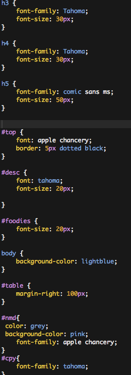

 As of today, Nov 28th, I feel pretty good about my CSS page. I use the same one for just about everything. I don't know if that's right. In fact, I think almost everything I'm doing besides the actual code is wrong. This doesn't worry me all to much because I'm still learning. If my CSS still looks like this by the end of the year THEN I'll be worried. Take note of how I used creative id's so that only I can understand it. I am a proud almost non-beginner coder man.
CSS is the DNA of the site. It's how it made to look.